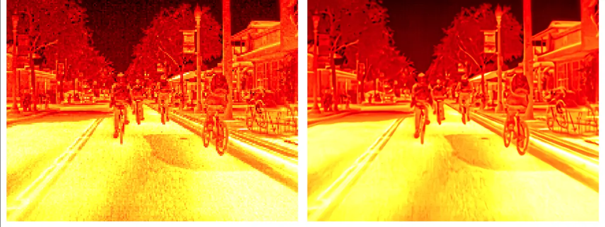

Engineering record — Rami Kronbi — 2026
p. 01
Fig. 0 — roll telemetry, simulated
Robotics & embedded-systems engineer · Beirut, Lebanon
sense
perceive
act
No. 01
360° Spherical
Panorama
Stitching
0°
Recovered sweep
309 frames · one handheld phone sweep
0.0dB
×3 upscale · PSNR
SSIM 0.757 · IMDN-derived, single channel

Input
Upscaled ×3
No. 03
Brainiacs
Autonomous
Race Car
0days
Built from scratch
Third place · WRO Future Engineers 2023 · with Wassim Ghaddar
v1.1.0
Arduino Library Manager
Anti-windup · filtering · autotuning
Simulated step response · ζ 0.35 · overshoot 31%
Election information · Lebanon
Source archiving · append-only history · lead developer, with Layth Ayache
0/ 5
Pull requests merged
Betaflight #15706
OpenFront #4868
OpenFront #4985
Settled · e → 0